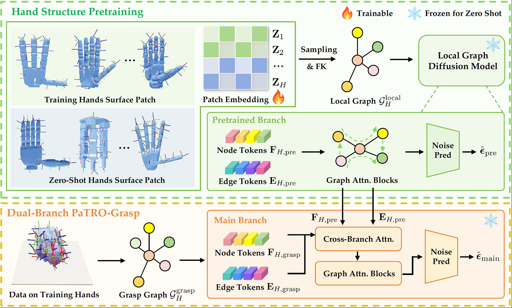

The growing diversity of dexterous hands calls for grasping policies that generalize to unseen hands. However, zero-shot transfer remains challenging due to substantial differences in action spaces across embodiments. To tackle this challenge, we propose PaTRO-Grasp, a universal policy built on surface-patch representations for arbitrary dexterous hands. PaTRO-Grasp adopts a two-stage training paradigm to establish cross-hand correspondence in a shared high-dimensional feature space, enabling zero-shot policy transfer to novel hand embodiments for grasp synthesis in cluttered environments. Across novel hands spanning three-finger grippers to four- and five-finger dexterous hands, PaTRO-Grasp achieves an average success rate of 84.3%, demonstrating strong zero-shot generalization across diverse hand morphologies.

Overview of PaTRO-Grasp: PaTRO-Grasp employs a dual-branch diffusion framework for zero-shot cross-embodiment grasp synthesis, requiring only lightweight patch-embedding optimization for novel hands deployment without additional training.